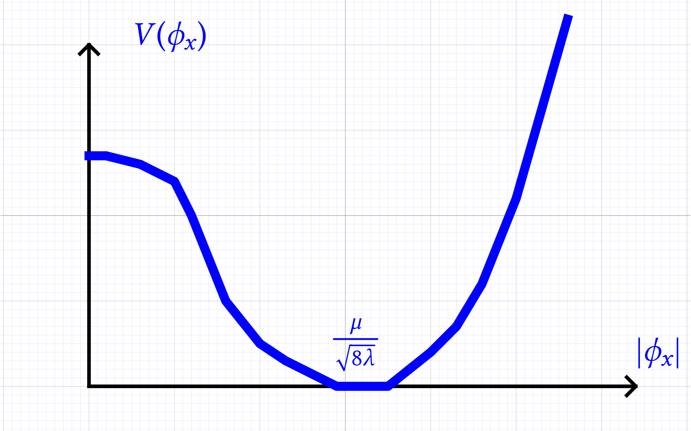
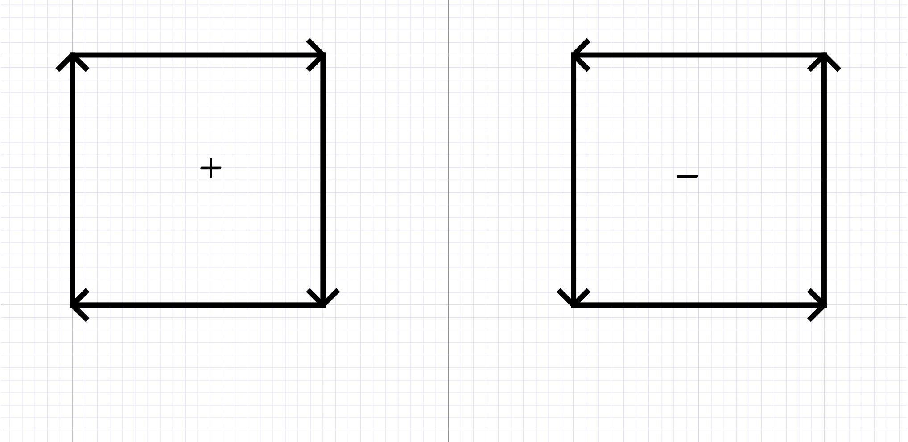

SRQ seminar – November 9th, 2018
Notes from a talk in the SRQ series.
SRQ Seminar 20181109 Brydges
The Higgs mechanism
References
-
Englert, Higgs Nobel lectures 2013
-
(Brydges), Balaban, Imbrie, Jaffe 1984 (3d continuum Higgs model)
[This is as far as we got mathematically to prove the Higgs
mechanism]
-
Kennedy, King (discussion of the phase transition)
-
E. Seiler book (1982) Lecture notes in physics
Setup

|
Box \(\Lambda \subset \mathbb{Z}^d\). Higgs field \(\phi : \Lambda
\rightarrow \mathbb{C}\), \(\phi \in \mathbb{C}^{\Lambda}\).
Yang–Mills field \(A : E \rightarrow \mathbb{R}\) where \(E\)
is the edge set of \(\mathbb{Z}^d\) and \(A_{x y} = - A_{y x}\)
where we choose a standard orientation for each edge.
We want to compactify the plane by adding a point at \(\infty\)
calling it \(\ast\) and joining it with an edge to every bounday
point of \(\Lambda\). We give \(\phi_{\ast}\) a fixed value chosen
later. We consider \(E\) including these additional edges.
|
Higgs action
\(\displaystyle S_{\operatorname{Higgs}} (A, \phi) := \frac{1}{2}
\sum_{e \in E} | \phi_x -
e^{i A_{x y}} \phi_y |^2 + \sum_{x \in
\Lambda} V (\phi_x) .\)
The potential \(V (\phi_x) = v (| \phi_x |)\) looks like
\(\displaystyle V (\phi_x) := \lambda | \phi_x |^4 - \frac{1}{4}
\mu^2 | \phi_x |^2 - E\)
|

|
YM action
For \(p \in \{ \text{faces} \} = : F\) (plaquettes). They come with
two orientations. We pick a standard orientation for each plaquette.
We denote by \(- p\) the plaquette \(p\) taken with the opposite
orientation.
|

|
Given \(A : E \rightarrow \mathbb{R}\) (a \(1\)–form) we let
\(\displaystyle (\partial A)_p := \sum_{x y \in \partial p} A_{x y},
\qquad (\partial A)_{- p}
= - (\partial A)_p\)
This is a 2–form. The YM action is given by
\(\displaystyle S_{Y M} (A) := \frac{1}{2 e^2} \sum_{p \in F} (\partial
A_p)^2,\)
where \(e\) is the electric charge.
Gauge invariance
The measure
\(\displaystyle e^{- S_{\text{YM}} (A) - S_{\text{Higgs}} (A, \phi)}
\mathrm{d}^E A
\mathrm{d}^{\Lambda} \phi\)
is not normalizable, because there is a non-compact group of symmetries
for it. Gauge transformations:
\(\displaystyle \phi_x \rightarrow e^{i \theta_x} \phi_x, \qquad A_{x y}
\rightarrow A_{x y} +
(\partial \theta)_{x y}\)
with \((\partial \theta)_{x y} := \theta_x - \theta_y\), \(\theta_x \in
\mathbb{R}\) for all \(x \in \Lambda\) and \(\theta_{\ast} = 0\). This
transformation leaves the measure invariant.
Gauge fixing
We need a gauge fix to remove this symmetry. We fix the total
action to be:
\(\displaystyle S = S_{\text{YM}} (A) + S_{\text{Higgs}} (A, \phi) +
G\)
where \(G = G (A)\) is such that
| \(\displaystyle \int_{\mathbb{R}^{\Lambda}} e^{- G
(A + \partial \theta)} \mathrm{d}^{\Lambda}
\theta = 1. \) |
(1) |
Example: Landau gauge fixing for \(\alpha
\rightarrow 0\) and \(\alpha = 1\) is Feynman.
\(\displaystyle G (A) = \frac{1}{2 \alpha^2}
\underbrace{(\partial^{\ast} A, \partial^{\ast}
A)}_{:= \sum_{x \in
\Lambda} (\partial^{\ast} A)_x^2} + \text{const},
\qquad
\quad
\raisebox{-0.5\height}{\includegraphics[width=14.8825429620884cm,height=8.92447199265381cm]{image-1.pdf}}\)
where \((\partial^{\ast} A)_x = \sum_{y : y \sim x} A_{x y}\) is the
discrete analog of the divergence and it is the adjoint of \(\partial\)
for the inner–product \(({,})\). The base point \(\ast\) is
introduced to deal with the invertibility of \(\partial^{\ast}
\partial\).
Exercise: check (1).
Observables
Gauge invariant, periodic in \(A\), finite \(\#\) of fields. Example:
\(\bar{\phi}_x e^{i A_{x y}} \phi_y\), \(x y \in E\). Let
\(\displaystyle \langle F \rangle_{\Lambda} := Z_{\Lambda}^{- 1}
\int_{\mathbb{R}^E \times
\mathbb{C}^{\Lambda}} F (A, \phi) e^{-
S_{\text{YM}} (A) - S_{\text{Higgs}}
(A, \phi) - G (A)} \mathrm{d}^E A
\mathrm{d}^{\Lambda} \phi .\)
Theorem 1. (\(d \geqslant 2\))
Fix \(\mu\) and \(\mu e / \sqrt{8 \lambda}\). For \(\lambda\)
sufficiently small, for observables \(F, G\):
-
\(\langle F \rangle = \lim_{\Lambda \nearrow \mathbb{Z}^d}
\langle F
\rangle_{\Lambda}\).
-
There exists an \(m > 0\) such that if we denote by \(G_x\) the
translation by \(x \in \mathbb{Z}^d\) of \(G\) we have
\(\displaystyle | \langle F G_x \rangle - \langle F \rangle
\langle G_x \rangle | \leqslant C
e^{- m | x |}, \qquad x \in
\mathbb{Z}^d .\)
(and the Kennedy–King paper discusses also the massless phase of
this model)
This theorem says tha the gauge particle (whose field is \(A\)) is a
massive particle even if it is related to a gauge symmetry. So gauge
theories are not incompatible with massive gauge particles.
Equivalence to compact \(U (1)\) theory.
Set \(e = 1\).
Theorem 2.
\(\displaystyle \int_{\mathbb{R}^E \times \mathbb{C}^{\Lambda}} e^{- S
(A, \phi)} F (A, \phi)
\mathrm{d}^E A \mathrm{d}^{\Lambda} \phi\)
\(\displaystyle = \int_{[- \pi, \pi]^E \times \mathbb{C}^{\Lambda}}
\left[ \sum_{v : \partial
v = 0} e^{- \frac{1}{2} \sum_{p \in F}
(\partial A_p + v_p)^2} \right] e^{-
S_{\text{Higgs}} (A, \phi)} F (A,
\phi) \mathrm{d}^E A \mathrm{d}^{\Lambda}
\phi\)
where \(v \in (2 \pi \mathbb{Z})^F\). (\(v\) is a vortex
variable)
In \(d = 3\): Given \(v \in (2 \pi \mathbb{Z})^F\) and a
\(3\)–cell \(c\), \((\partial v)_c = \sum_{p \in \partial c}
v_p\).
\(\displaystyle
\raisebox{-0.5\height}{\includegraphics[width=14.8825429620884cm,height=8.92447199265381cm]{image-1.pdf}}\)
Therefore \(\partial v = 0\) requires to identify closed loops which
carries currents around without letting it splill.
In \(d = 2\) we have \(\sum_p v_p = 0\). (one has to consider the point
\(\ast\) to show this).
The expression
\(\displaystyle \left[ \sum_{v : \partial v = 0} e^{- \frac{1}{2}
\sum_{p \in F} (\partial A_p
+ v_p)^2} \right]\)
is \(2 \pi\) periodic in each \(A_{x y}\). (This will allow us to
introduce \(U (1)\) invariance).
\(\displaystyle A_{x y} \rightarrow A_{x y} + \partial \theta_{x y}
\quad \text{(mod $2 \pi$)}
.\)
Why is periodic. A change \(A_{x y} \rightarrow A_{x y} + 2 \pi\) can be
absorbed by changing \(v\).
Higgs mechanism
Make a change of variables
\(\displaystyle \phi_x = \rho_x e^{i \theta_x}, \qquad A_{x y}
\rightarrow A_{x y} + \partial
\theta_{x y}\)
with \(\rho_x \geqslant 0\). Now the rhs of Theorem 2
(putting back the \(e\)) has the form
\(\displaystyle = \int_{[- \pi / e, \pi / e]^E \times
\mathbb{C}^{\Lambda}} \left[ \sum_{v :
\partial v = 0} e^{- \frac{1}{2}
\sum_{p \in F} (\partial A_p + v_p)^2}
\right] e^{- \frac{1}{2} \sum_{e
\in E} | \rho_x - e^{i e A_{x y}} \rho_y |^2}
F (A, \rho e^{i \theta})
\mathrm{d}^E A \prod_{x \in \Lambda} e^{- V (\rho_x)}
\rho_x \mathrm{d}
\rho_x\)
and approximating \(\rho_x\) with \(\mu / (8 \lambda)^{1 / 2}\) (due to
the potential term) we have
\(\displaystyle - \frac{1}{2} \sum_{e \in E} | \rho_x - e^{i A_{x y}}
\rho_y |^2 \approx -
\frac{1}{2} \sum_{e \in E} \frac{\mu^2}{(8
\lambda)} | 1 - e^{i e A_{x y}} |^2
\approx - \frac{1}{2} \sum_{e \in E}
\underbrace{\frac{\mu^2 e^2}{(8
\lambda)}}_{m_A} | A_{x y} |^2\)
where \(m_A\) is called classical mass. Taking into account
flucutations one can prove that \(\rho_x\) behaves like a Gaussian field
fluctuating around \(\mu / (8 \lambda)^{1 / 2}\) and \(A\) is a massive
gaussian. And the vortices provide only rare fluctuations which can be
rigorously estimated and do not change this leading order behaviour. The
rigorous proof goes via cluster expansion.
Proof of equivalence in Theorem 2.
\(\displaystyle \int_{\mathbb{R}^E \times \mathbb{C}^{\Lambda}} e^{-
S_{\text{YM}} (A) -
S_{\text{Higgs}} (A, \phi)} F (A, \phi) \mathrm{d}^E
A \mathrm{d}^{\Lambda}
\phi\)
\(\displaystyle = \int_{\mathbb{R}^E \times \mathbb{C}^{\Lambda}} e^{-
S_{\text{YM}} (A) -
S_{\text{Higgs}} (A, \phi)} F (A, \phi) \left[ (2
\pi^{- \Lambda}) \int_{[-
\pi, \pi]^{\Lambda}} e^{- G (A + \partial
\theta)} \mathrm{d}^{\Lambda} \theta
\right] \mathrm{d}^E A
\mathrm{d}^{\Lambda} \phi\)
\(\displaystyle = \sum_{a \in (2 \pi \mathbb{Z})^E} \int_{[- \pi,
\pi]^E} e^{- S_{\text{YM}}
(A + a) - S_{\text{Higgs}} \left( A +
\not{a}, \phi \right) } F \left( A +
\not{a}, \phi \right) \left[ (2
\pi^{- \Lambda}) \int_{[- \pi,
\pi]^{\Lambda}} e^{- G (A + a + \partial
\theta)} \mathrm{d}^{\Lambda} \theta
\right] \mathrm{d}^E A
\mathrm{d}^{\Lambda} \phi\)
\(\displaystyle = \sum_{v : \partial v = 0} \sum_{a : \partial a = v}
\int_{[- \pi, \pi]^E}
e^{- S_{\text{YM}} (A + a) - S_{\text{Higgs}}
\left( A + \not{a}, \phi \right)
} F \left( A + \not{a}, \phi \right)
\times\)
\(\displaystyle \times \left[ (2 \pi^{- \Lambda}) \int_{[- \pi,
\pi]^{\Lambda}} e^{- G (A + a
+ \partial \theta)} \mathrm{d}^{\Lambda}
\theta \right] \mathrm{d}^E A
\mathrm{d}^{\Lambda} \phi\)
(here we use the fact that we have an exact sequence). Moreover again by
exactness we have that \(\partial a = v\) iff \(a = a_v + \partial b\).
Therefore the sum over \(a\) is equivalent to the sum over \(b\). So
\(\displaystyle = \sum_{v : \partial v = 0} \sum_b \int_{[- \pi, \pi]^E}
e^{- \frac{1}{2}
\sum_{p \in F} (\partial A_p + v_p)^2 -
S_{\text{Higgs}} (A, \phi) } F (A,
\phi) \times\)
\(\displaystyle \times \left[ (2 \pi^{- \Lambda}) \int_{[- \pi,
\pi]^{\Lambda}} e^{- G (A +
a_v + \partial (\theta + b))}
\mathrm{d}^{\Lambda} \theta \right] \mathrm{d}^E
A \mathrm{d}^{\Lambda}
\phi\)
\(\displaystyle = \sum_{v : \partial v = 0} \int_{[- \pi, \pi]^E} e^{-
\frac{1}{2} \sum_{p \in
F} (\partial A_p + v_p)^2 - S_{\text{Higgs}} (A,
\phi) } F (A, \phi) \times\)
\(\displaystyle \times \sum_b \left[ (2 \pi^{- \Lambda}) \int_{[- \pi,
\pi]^{\Lambda}} e^{- G
(A + a_v + \partial (\theta + b))}
\mathrm{d}^{\Lambda} \theta \right]
\mathrm{d}^E A \mathrm{d}^{\Lambda}
\phi\)
and now
\(\displaystyle \sum_b (2 \pi^{- \Lambda}) \int_{[- \pi,
\pi]^{\Lambda}} e^{- G (A + a_v +
\partial (\theta + b))}
\mathrm{d}^{\Lambda} \theta = (2 \pi^{-
\Lambda})
\int_{\mathbb{R}^{\Lambda}} e^{- G (A + a_v + \partial
\theta)}
\mathrm{d}^{\Lambda} \theta = 1!!\)
so we are done.
The exact sequence we used is (for \(d = 3\))
\(\displaystyle 0 \longrightarrow (2 \pi \mathbb{Z})^{\Lambda \cup \{
\ast \}} / (2 \pi
\mathbb{Z}) \overset{\partial}{\longrightarrow} (2 \pi
\mathbb{Z})^E
\overset{\partial}{\longrightarrow} (2 \pi
\mathbb{Z})^F
\overset{\partial}{\longrightarrow} (2 \pi \mathbb{Z})^{\{
\text{$3$}
-\operatorname{cells} \}} \overset{\partial}{\longrightarrow}
(2 \pi
\mathbb{Z})^{\{ \text{$4$} -\operatorname{cells} \}}
\longrightarrow 0.\)